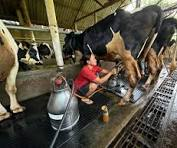
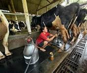
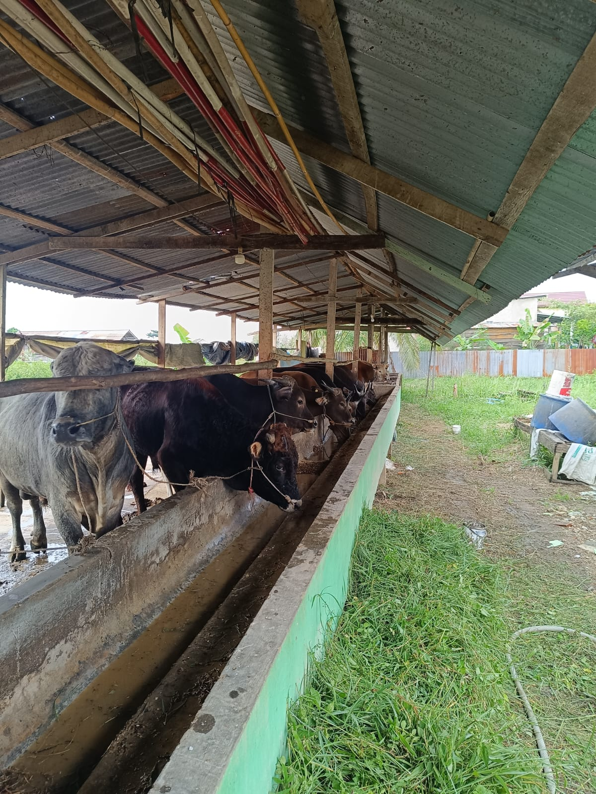
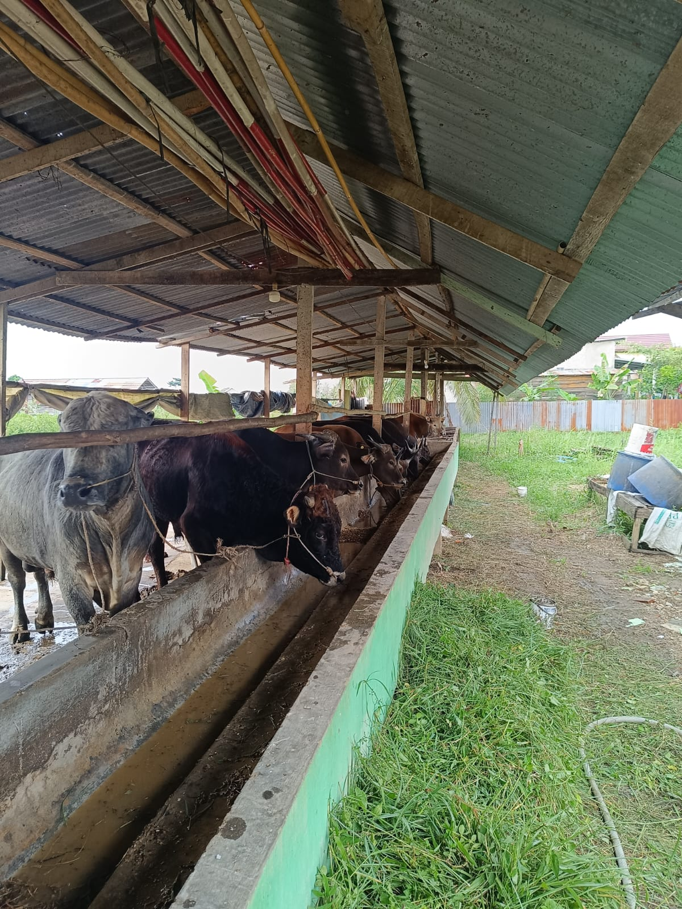

PETERNAKAN PAK BUDI FARM SAPI KURBAN
Peternakan sapi modern dengan standar kualitas terbaik di Palembang
Hubungi Kami
Peternakan sapi modern dengan standar kualitas terbaik di Palembang
Hubungi KamiSejak berdiri tahun 2010, peternakan pak Budi telah mengembangkan sistem peternakan sapi terintegrasi dengan teknologi modern untuk menghasilkan sapi berkualitas tinggi.
Kami memadukan pengetahuan tradisional dengan inovasi terkini dalam bidang peternakan untuk memastikan kesehatan dan kualitas ternak kami.
Menjadi peternakan sapi terdepan dengan kualitas unggul di Indonesia
Menyediakan sapi berkualitas dengan sistem peternakan berkelanjutan


 

Mengenal visi dan dedikasi di balik kualitas Sapi Pak Budi Farm
Saya, M. Daffa Abhiyasa, adalah pemilik Peternakan Sapi Pak Budi Farm. Meski saat ini saya masih menempuh studi di UIN Raden Fatah pada Program Studi Manajemen Pendidikan Islam, kecintaan saya terhadap dunia peternakan mendorong saya untuk membangun usaha ini. Peternakan ini saya mulai sejak tahun 2010 dengan tujuan menghadirkan pengelolaan ternak yang lebih baik, mengutamakan kesejahteraan hewan, serta menerapkan praktik yang berkelanjutan. Saya percaya bahwa ilmu yang saya pelajari dapat dipadukan dengan manajemen modern untuk menciptakan peternakan yang lebih profesional, bertanggung jawab, dan bermanfaat bagi masyarakat.
"Setiap sapi yang kami rawat adalah cerminan komitmen kami terhadap kualitas, kesehatan, dan keberkahan, inovasi adalah kunci tetapi hati adalah esensinya."
14+ Tahun Pengalaman
Manajemen Peternakan
Sertifikasi Halal & NKV
Terjamin Mutunya
Spesialis Sapi Kurban
Fokus Kualitas
Sistem Pakan Alami
Pakan Organik & Terbaik
Kami menyediakan berbagai jenis sapi berkualitas dengan standar pemeliharaan tinggi

Sapi pedaging dengan pertumbuhan cepat dan kualitas daging premium

Sapi impor dengan marbling daging terbaik untuk steak premium

Sapi lokal dengan daya tahan tinggi dan adaptasi iklim tropis
Kami memiliki fasilitas modern untuk kenyamanan dan kesehatan ternak
Kandang dengan sistem ventilasi optimal, pencahayaan alami, dan lantai yang nyaman untuk ternak.
Fasilitas kesehatan ternak lengkap dengan dokter hewan berpengalaman dan obat-obatan terstandar.
Pasokan air bersih terus menerus dengan sistem filtrasi untuk kebutuhan minum dan kebersihan ternak.
Sistem keamanan terpadu dengan CCTV dan petugas jaga untuk melindungi aset peternakan.
 


Pemilik Restoran
"Kualitas sapi dari Sapi Moo-dern Ranch sangat konsisten. Dagingnya empuk dan beraroma khas, membuat hidangan di restoran saya semakin diminati pelanggan."

Pedagang Pasar
"Sudah 3 tahun bekerjasama dengan peternakan ini. Sapi-sapinya sehat dan pertumbuhannya bagus. Pelayanannya juga sangat profesional."

Peternak
"Saya belajar banyak tentang peternakan modern dari tim Sapi Moo-dern Ranch. Bibit yang saya beli dari mereka tumbuh dengan sangat baik."
Kami siap menjawab pertanyaan dan kebutuhan Anda tentang peternakan sapi
Plaju Darat, Kec. Plaju, Kota Palembang, Sumatera Selatan
info@sapipakbudi.com
Senin - Minggu: 08.00 - 17.00 WIB